Paru Banjara
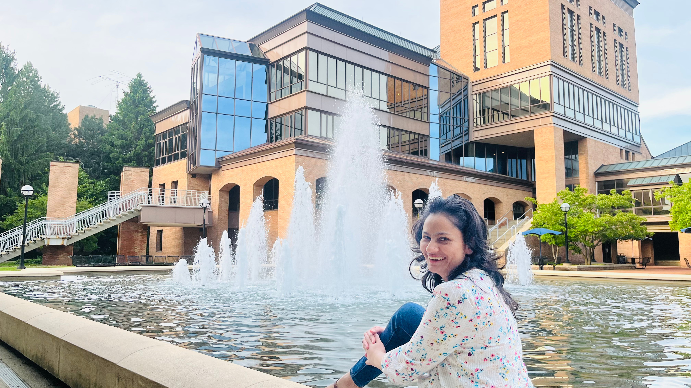
I am a Big Data Analytics student in Master's of Science in Information (MSI) program at the University of Michigan. I am also currently pursuing a graduate certificate in Spatial Analysis. I completed my undergraduate degree in Information Analysis. In addition, I have a health-care background. I attended a nursing college in Nepal, where I had various opportunities to learn and practice health-care skills during my nursing training. Besides all, I have a great passion for exploring different hobbies, such as design, artwork, photography, and travelling.
Data Science Experience
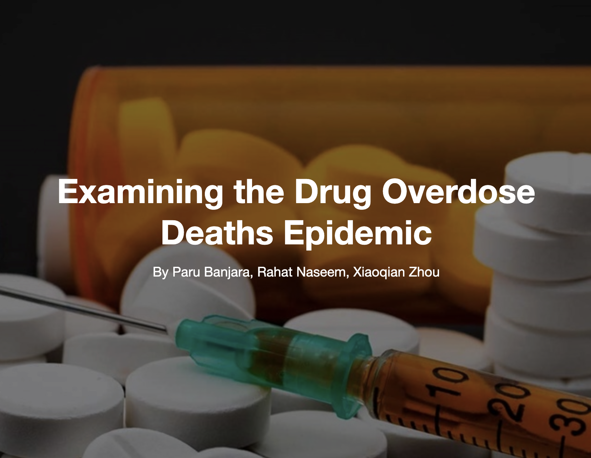
This is a data visualization project for an Information Visualization (SI 649) course. I worked with two other team members and generated interactive visualizations using Altair. I created two visualizations. The link for the website containing visualizations can be found here. The first one (Fig.3) compared the drug overdose death rates and unemployment rates across states in the United States. Second visualization (Fig.4) compared the drug overdose death rates along with unemployment and poverty rates per state.
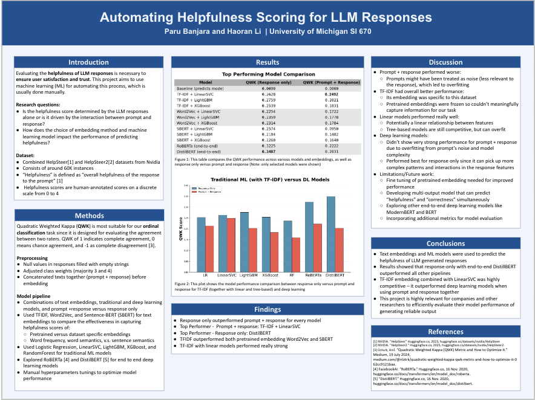
This is a course project for Applied Machine Learning. I collaborated with another student and trained models using various machine learning and deep learning techniques. This project was inspired by the idea of assigning helpfulness scores to the responses produced by LLMs. Primarily, the scoring was done manually and assigned helpfulness scores of 0 to 4 (least helpful to most helpful) for each response. However, this project was focused on automating that process by using trained models to predict the helpfulness scores. A link to the poster can be found here.
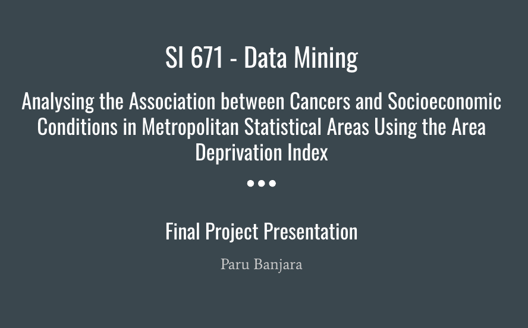
This is a project for Data Mining course. The objective of this project was to understand the relationship between various types of cancers and Area Deprivation Index (ADI) in Metropolitan Statistical Areas (MSA). I used multiple datasets - a cancer dataset, an ADI dataset, and two geospatial datasets to perform analyses and analyze the relationships between cancers and ADI in MSA. The preprocessing involved data cleaning in order to remove the non-relevant information, change data types, and drop NAN values. Then, I performed geospatial joins in order to join the cancer and ADI datasets on census block groups. The methods I used include dimensionality reduction using Principal Component Analysis (PCA), correlation analysis, cluster analysis using KMeans clustering, and topic modeling using Singular Value Decomposition (SVD). A link to the presentation can be found here.
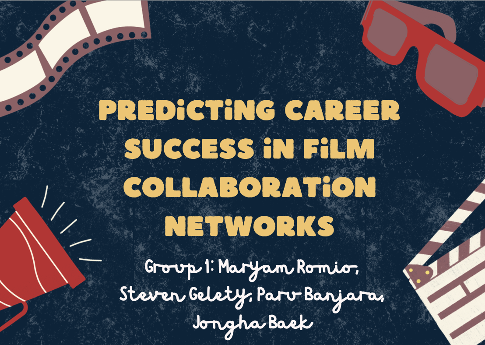
This is a final course project for Networks course. I collaborated with three other students to investigate how actor and crew success in film industry is determined based on their collaboration patterns within the industry. This project utilized the TMDB 5000 Movies Datasets from Kaggle that allowed the team to incorporate rich information on cast, crew, genres, revenues, and budgets. The methods used were Graph Convolutional Networks (GCNs), Community Detection, and Centrality Measures (such as eigenvector centrality and degree centrality). The presentation link can be found here.
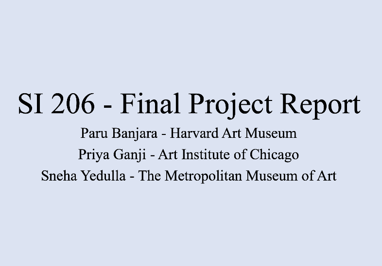
This project is for the Object Oriented Programming course (SI 206). A team of three students worked on museum data. Each person got involved in a separate museum Application Programming Interface (API). I worked with the Harvard Art Museum API and extracted data related to artists and their artworks. The goal of the project was to compare the data for each museum to identify the average duration to complete the artworks. This project involved making api calls to museum api to retrieve information, cleaning the data, creating database and database tables, storing data into database tables, and creating visualizations. A link to the GitHub repository with code can be found here.
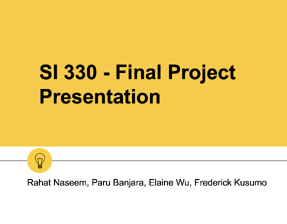
This project was for a data manipulation course. I worked with real-world datasets from Southeast Michigan with a team of four. This project was an opportunity to utilize the data manipulation skills obtained throughout the semester. I answered four different questions by performing groupby and mean aggregate to identify the fire incident types and the average duration to dispose fire since it was reported, times series analysis on ford stock prices, sentiment analysis on the association between the 911 call description and the type of crime, and finally groupby and mean aggregate to identify bird frequency by mean temperature. The presentation link can be found here.
Web Development Experience
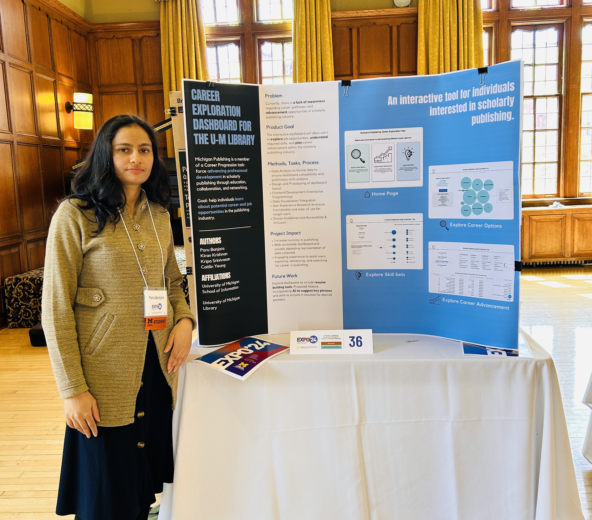
This is an image of myself during a poster presentation event (Expositon 2024) at the University of Michigan, Ann Arbor hosted by School of Information (UMSI). The project involved building a multi-page career exploration tool to be utilized by the individuals who are interested in exploring career opportunities in Scholarly Publishing. The interactive dashboard incorporated three different personas and a home page. I led the project by guiding other team members from developing mock-up sketches of the personas and turining them into prototypes to developing a proof-of-concept interactive dashboard. A slide deck presentation of the project can be found here. The poster can be found here and a published paper with mentions of contributors of the interactive dashboard can be found here.
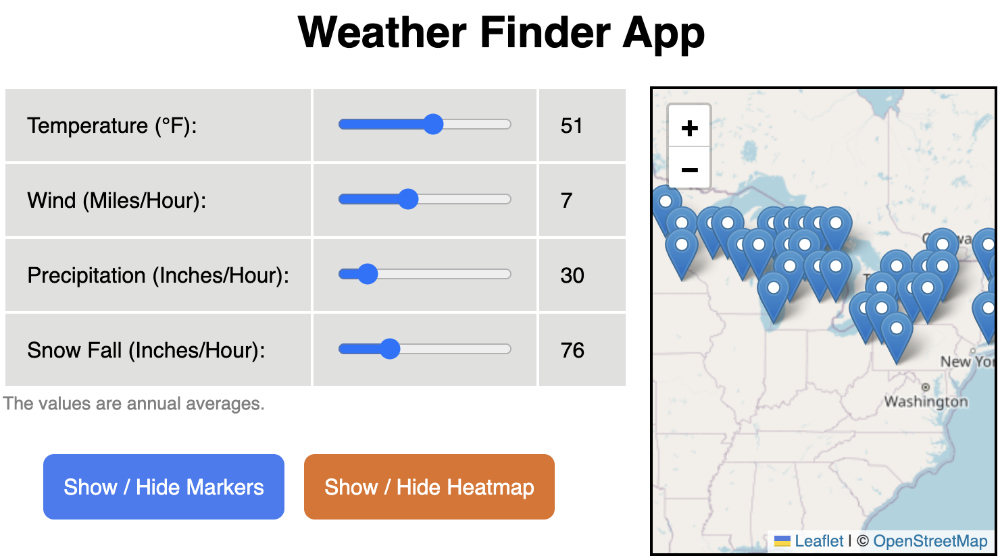
I developed a basic weather finder app for a web development course called Building Interactive Applications (SI 379). I used a weather dataset provided by the National Centers for Environmental Information. First, I performed data cleaning and transformed the data into json format so that I could use it for the app. I used the Leaflet JavaScript library to integrate a map into the project. The design was mainly focused around functionality (JavaScript) rather than on the presentation and accessibility. The app utilizes heatmap and marker components to present the annual averages for temperature, wind, precipitation and snow fall for various places in the U.S. A link to the web application can be found here.
Research Experience
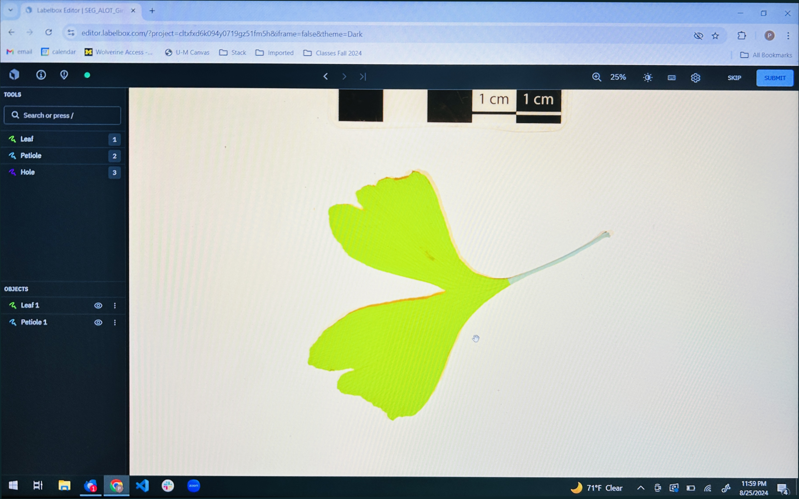
I worked as a Research Assistant where I assisted with labeling thousands of plant images using a software called Labelbox for training machine learning models. I used bounding box and segmentation methods to annotate and produce high quality images. Besides annotating images, I gained skills in effective communication and research from this experience.
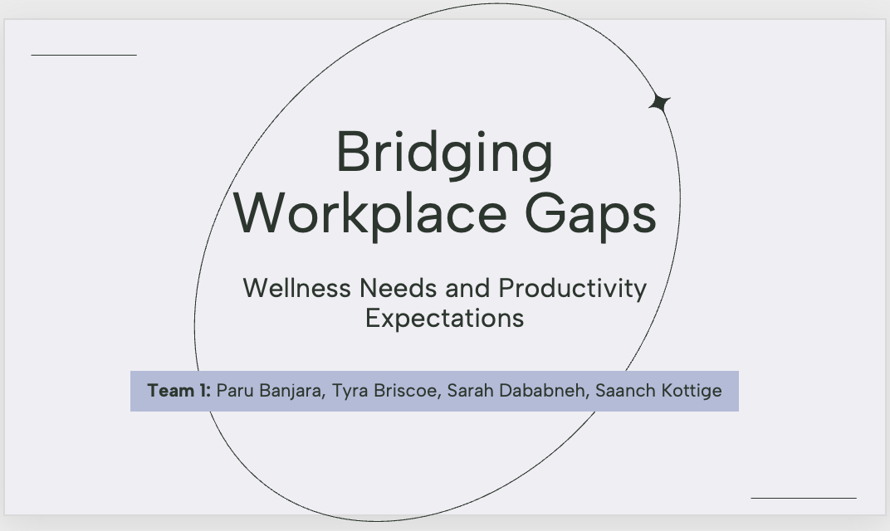
I worked with a team of four on a client project. The theme of this project was future of work. The project involved research writing, conducting interviews, and thematic analysis where we collected data and performed qualitative coding and then made themes using Lucidspark board. At the end of the project, we prepared a report of our research findings and delivered it to the client.
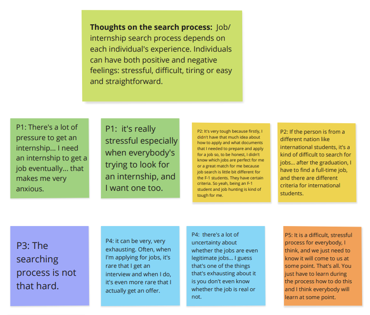
I worked on a research project for a course called Needs Assessment and Usability Evaluation (SI 422). This course is part of the undergraduate User Experience (UX) Design track. My major was in Information Analysis, but I took this course due to my curiosity in UX. The project was focused on product research by understanding the users' needs while utilizing a job search platform. This course helped me gain highly valuable skills in reasearch and user study. I conducted several interviews for data collection. Then, performed qualitative coding and thematic analysis in order to understand the needs of the users and evaluate the usability of various job search websites.
Nursing Experience
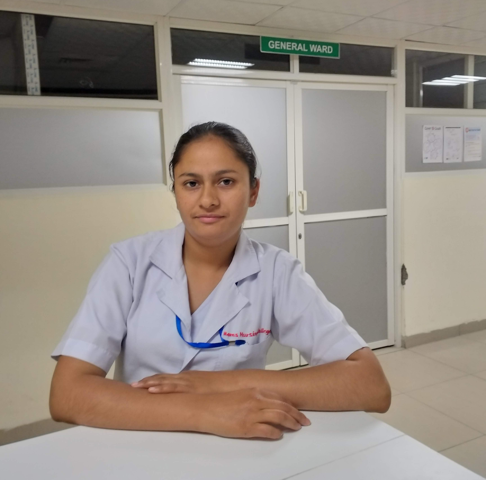
Before starting my career in data science, I attended a nursing school in Nepal. I worked at different hospitals as a student nurse. I have worked directly with patients, clients, community members, and health care teams. This picture was taken at a hospital while I was working night shift in the general ward.
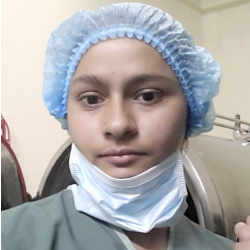
While working as a student nurse, I also gained soft skills, such as working in a team, building interpersonal relationships with people from different domains and backgrounds, working under a stressful situation and acting accordingly, and providing counseling and health guidance to patients and clients. This is picture of myself working at a Central Sterile Services Department (CSSD). The steralization equipment can be seen behind me.
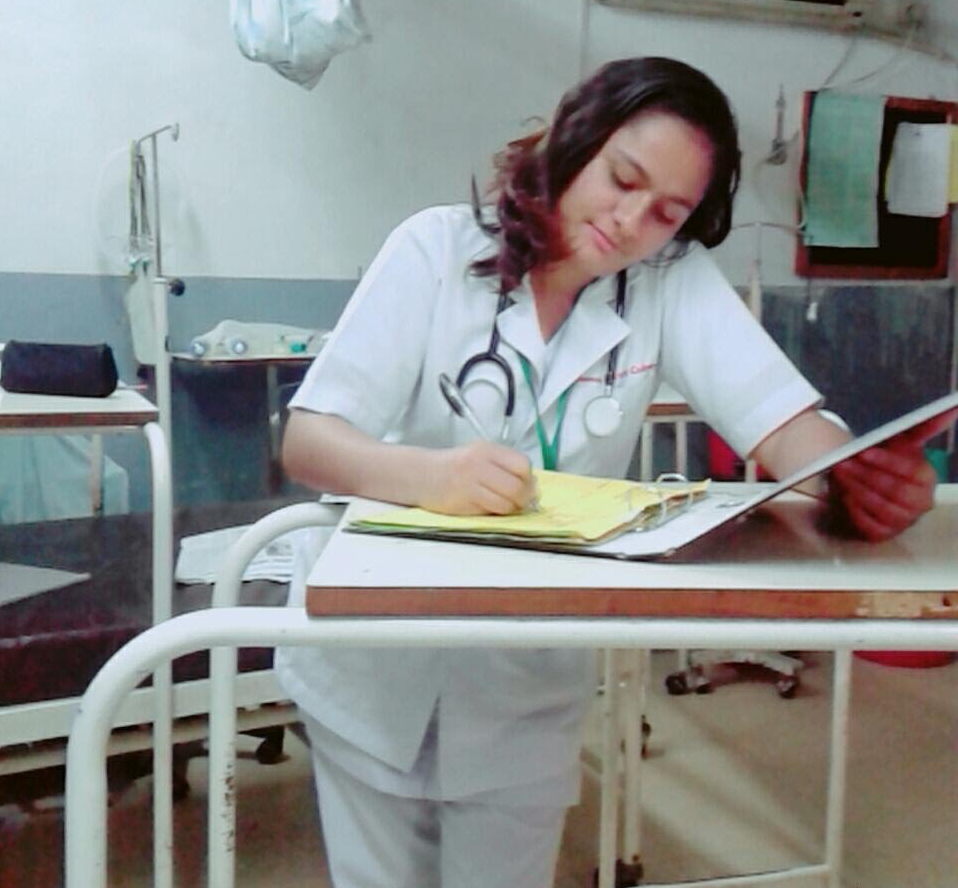
I have worked with the patients in the most critical situations, such as patient with burn, fracture vertebra, post-operative patient, and patient in labor and delivery. This image showcases me working at an Intensive Care Unit (ICU) and documenting patient information, such as vital signs, food and intravenous fluid intake, medications, and other details into the patient file.
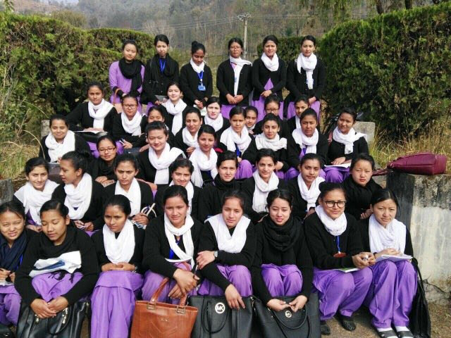
This is a group image of my nursing cohort. I am sitting all the way to the left (second row from back). This image was taken while we were visiting a Cerebral Palsy Center in Nepal, where we got to learn about children with Cerebral Palsy. There, I had the chance to hear about their daily struggles, progresses and intellectual abilities of those children from their care takers.
Here you can find pictures of my hobbies, interests, and previous courseworks: Photography&Travelling and Arts&Design